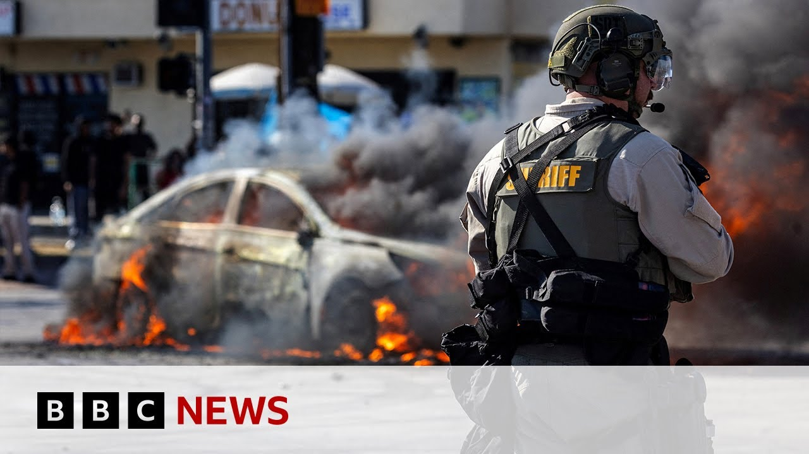

【洛杉矶抗议活动似乎平息，市长告诫示威者“不要制造混乱” | BBC新闻】
Summary: Los Angeles leaders accuse Trump of provoking chaos as protests turn violent, with clashes, tear gas, and looting reported. Trump deployed the National Guard against local officials' wishes, escalating tensions. Immigrant communities feel targeted, and the city remains unstable despite authorities claiming control.
摘要： 洛杉矶领导人指责特朗普煽动混乱，抗议活动演变为暴力冲突，催泪瓦斯和抢劫事件频发。特朗普不顾地方官员反对派遣国民警卫队，加剧紧张局势。移民社区感到被针对，尽管当局声称局势可控，城市仍不稳定。

⏱️ Estimated Reading Time: 11 min
📚 六级生词 📚 雅思生词 📚 托福生词 📚 GRE生词 📚 视频里的生词
City and state leaders in Los Angeles have accused President Trump of deliberately provoking chaos after a third day of protests descended into violence.
洛杉矶市和州领导人指责特朗普总统在连续三天的抗议演变为暴力后蓄意煽动混乱。
Law enforcement officers fired tear gas and rubber bullets at crowds he'd gathered while some protesters torched cars and tried to block a major road.
执法人员向聚集人群发射催泪瓦斯和橡皮子弹，部分抗议者焚烧车辆并试图封锁主干道。
Well, President Trump called for the National Guard to move in following earlier confrontations as immigration officers rounded up unauthorized migrants.
特朗普总统在早前冲突后要求国民警卫队介入，同时移民官员围捕无证移民。
The Los Angeles Police Department says that a phone alerts been sent to people in the Civic Center area declaring an unlawful assembly with protesters told to leave.
洛杉矶警察局表示已向市政中心区域发送手机警报，宣布集会非法并要求抗议者离开。
They also add that business owners are reporting looting.
他们还补充称，商户报告了抢劫事件。
Well, our correspondent John Sudworth has the latest.
本台记者约翰·苏德沃斯带来最新报道。
Once again, downtown Los Angeles echoed to the sound of tear gas and rubber bullets.
洛杉矶市中心再次回荡着催泪瓦斯和橡皮子弹的声音。
At one point, protesters surged onto one of the city's busiest highways before the police eventually cleared the road.
抗议者一度涌上该市最繁忙的高速公路，警方最终清场。
These were scenes that were repeated throughout the day.
类似场景全天反复上演。
Over the past few minutes, you can probably see the guy with a green gun there.
过去几分钟里，你可能看到那个持绿色枪械的人。
He's been firing rubber bullets at the direction of the crowd.
他正向人群方向发射橡皮子弹。
And it shows you just how volatile the situation is.
这显示出局势多么动荡。
This though is what's turned the localized protests into a major story.
然而，正是这一点将局部抗议升级为重大事件。
President Trump's protocol busting decision to send in the National Guard against the wishes of the state governor and the city's mayor.
特朗普总统打破常规，不顾州长和市长意愿派遣国民警卫队。
Deploying federalized troops is a dangerous escalation, but we need to be real about this.
联邦军队的部署是危险升级，但我们必须正视现实。
This is about another agenda.
这关乎另一项议程。
It's not about public safety.
与公共安全无关。
There's clearly no plan and there is clearly no policy.
显然既无计划也无政策。
Mr. Trump though insists the National Guard are needed to keep the peace.
但特朗普坚称国民警卫队是维持和平的必要手段。
I mean, if we see danger to our country and to our citizens, we'll be very, very strong in terms of law and order.
若国家与公民安全受威胁，我们将强力维护法律与秩序。
It's about law and order.
这就是法律与秩序。
This Whimo self-driving car was set a light.
这辆Whimo自动驾驶汽车被点燃。
Another illustration of the sporadic violence, but the majority of protesters have been peaceful.
零星暴力的又一例证，但多数抗议者是和平的。
Many of them from the immigrant community themselves.
许多人本身来自移民社区。
There's some people that they're working not not even for the minimum wage, but they have to work.
有些人甚至拿不到最低工资却不得不工作。
And what do you say when Donald Trump says, "I have a mandate. I was elected on the promise of deporting people."
当特朗普称"我有授权，当选时就承诺驱逐移民"，你作何回应？
He's not the boss, only God.
他不是主宰，唯有上帝。
The government though insists that the immigration raids will continue and LA is bracing for more of this.
但政府坚称移民突袭将继续，洛杉矶正为更多冲突做准备。
John Sudworth, BBC News, Los Angeles.
BBC新闻，约翰·苏德沃斯于洛杉矶报道。
Well, our reporter Carl Nasman's been monitoring events for us in Los Angeles.
本台记者卡尔·纳斯曼在洛杉矶持续追踪事件。
He's been speaking to my colleague Sally Bondok.
他与我的同事萨莉·邦多克进行了对话。
It's still a very fluid situation here tonight in Los Angeles.
今晚洛杉矶局势仍高度不稳定。
We've been watching as several police cars and helicopters above us are really trying to tackle some of these pockets of unrest that spread out across this area of downtown Los Angeles tonight.
我们看到多辆警车和直升机正试图控制今晚洛杉矶市中心多处骚乱。
We've seen just in the past uh a few minutes or so several fires being set.
过去几分钟内就发生数起纵火。
There was a car driving through a crowd.
有车辆冲撞人群。
It's just felt slightly out of control if not very out of control at times.
即便不算完全失控，也已接近失控边缘。
And this is all really spiraling from what we saw earlier today right here.
这一切都源于今天早些时候在此地发生的事件。
This is Highway 101.
这是101号高速公路。
This goes going through the center of Los Angeles.
贯穿洛杉矶市中心。
And you can see here still a long line of police cars.
可见一长排警车仍驻守于此。
These are California Highway Patrol vehicles.
这些是加州公路巡逻队的车辆。
They are still parked there guarding the entrance to the highway here.
它们仍停驻守卫着高速公路入口。
And you can still see obviously that part of the freeway is still shut down to traffic.
显然该路段仍禁止通行。
It's been like that for hours.
已持续数小时。
They are struggling to get this back open.
当局正竭力恢复通行。
And even hours ago, there were still clashes between some of these patrol officers and demonstrators who were standing above these overpasses that go over the freeway in this section.
数小时前，巡逻警察与天桥上的示威者仍在此路段爆发冲突。
We saw some very intense clashes.
我们目睹了激烈冲突。
In fact, fires breaking out down below on top of and around some of these police vehicles.
甚至有警车及周边区域起火。
Eventually, it seemed police were able to gain the upper hand and move these demonstrators away from this area.
最终警方似乎占据上风，驱散了该区域示威者。
that though spreads some of these troublemakers and people that are out late into this night really intent on continuing these demonstrations out into the further reaches of the city.
但这导致部分闹事者深夜继续向城市外围扩散示威。
But, you know, this is a a scene right now where we've seen several dozen people arrested and the authorities right now trying to gain uh the upper hand.
目前已有数十人被捕，当局正试图掌控局势。
And of course, these are all scenes that we know President Trump will be following and will be watching.
特朗普总统无疑正密切关注这些场景。
And this is something that, you know, he says he wants law and order on the streets.
他声称要恢复街头法律与秩序。
Officials here say they have it under control, but right now that the scenes that we're seeing play out certainly don't necessarily say that Los Angeles right now is is a city that is necessarily calm.
当地官员称局势可控，但当前场景难以证明洛杉矶已恢复平静。
And of course, President Trump made the very controversial step of sending in the National Guard on Sunday.
特朗普周日极具争议地派遣了国民警卫队。
Just describe how that has changed things and impacted uh the mood among demonstrators and protesters.
请说明此举如何改变局势及影响示威者情绪。
Yeah, I was speaking with one demonstrator earlier on this afternoon and she was very emotional and and she said really the spark for these protests across these three days in Los Angeles were those immigration enforcement actions that we saw at several locations in Los Angeles.
下午采访一位情绪激动的示威者时，她表示洛杉矶三日抗议的导火索是移民执法行动。
This is a sanctuary city.
这是座庇护城市。
It's a city made up of immigrants.
由移民构成的城市。
It's has one of the largest concentrations of undocumented migrants in the entire country.
拥有全美最庞大的无证移民群体之一。
And so those immigration actions by those ICE agents I think really struck this community personally and struck it hard.
ICE的移民行动直击该社区痛处。
But you know that was a spark.
但这只是导火索。
But the fuel seems to be at least if you uh talk to California officials the president's decision to federalize some of these National Guard members, send them to Los Angeles and have them symbolically essentially guard the federal buildings.
加州官员认为，特朗普联邦化国民警卫队并派其象征性守卫联邦建筑的决定如同火上浇油。
Because it's interesting, I should say that even despite the amount of unrest that we have seen playing out this afternoon and this evening, we actually haven't seen the National Guard itself doing much of the responding.
值得注意的是，尽管今日骚乱频发，国民警卫队却鲜少直接应对。
They're they're not the ones out here confronting protesters or demonstrators.
他们并未直面抗议者。
They haven't been the ones really here to try to get things under control.
也非维持秩序的主力。
They've mostly just been guarding the entrance to the federal detention center, which is just across the highway here.
主要任务仅是守卫高速公路对面的联邦拘留中心入口。
So although it was a very symbolic move, it it seems to be something that that definitely inflamed tensions here, but it doesn't seem like they're actually playing that role of peacemaker like President Trump might have hoped.
尽管这一象征性举动激化矛盾，却未如特朗普所愿发挥调停作用。
Well, it's definitely inflamed tensions uh between Gavin Newsome and the president.
这无疑加剧了加州州长加文·纽瑟姆与总统的紧张关系。
That's California's governor, of course, Gavin Newsome, who is urging uh President Trump to revoke the troop deployment.
纽瑟姆正敦促特朗普撤回军队。
But it would seem the White House is not willing to do that at this moment, saying they are rightfully stepping in to restore law and order.
但白宫表示依法介入恢复秩序，暂无撤军意向。
So a real stalemate there.
双方陷入僵局。
Even as we see the tension and the clashes playing out in the streets, we also have this war of words, don't we, between state officials like Gavin Newsome, the local mayor here, Karen Bass, and then the president of the United States.
街头冲突持续的同时，纽瑟姆、市长凯伦·巴斯与特朗普也展开唇枪舌战。
We heard from Gavin Newsome today saying he actually is considering suing the Trump administration tomorrow over that move of deploying California National Guard here into Los Angeles.
纽瑟姆今日称正考虑明日就派遣国民警卫队起诉特朗普政府。
That's a move that the governor says is is his call to make, not the president.
州长称此决策权在州政府而非总统。
So I think we could see some legal battles that will play out here.
或将引发法律战。
This is all kind of unprecedented territory.
这一切皆属前所未有。
These are things we have not seen in many decades in the United
这是美国数十年来未见的局面。